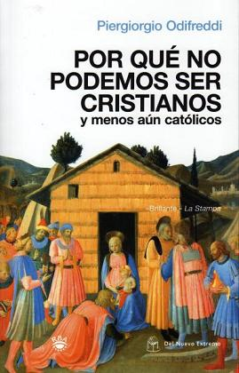
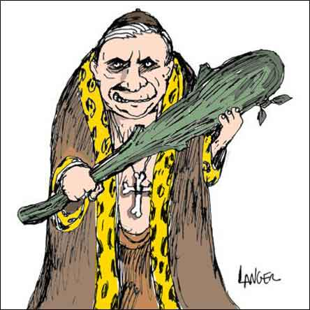

Entrevista de Juan Jesús Mantilla a Piergiorgio Odifreddi, autor de “Porque no podemos ser cristianos, y menos aún católicos”
Aunque es un ateo confeso, todavía tiene callos en los pies por culpa de su última experiencia mística. Piergiorgio Odifreddi (Cuneo, Italia, 1950) acaba de regresar del Camino de Santiago, esa meca de la cristiandad que ha recorrido durante dos semanas con su amigo Sergio Valzania. El itinerario ha dado que hablar en Italia. Juntos han hecho en cada etapa un programa especial para la emisora RAI 3. La gracia está en que Odifreddi no cree, pero Valzania sí se confiesa católico a ultranza. “Al final hemos quedado como empezamos. Ni él me ha convencido a mí, ni yo he logrado quebrar su fe”, comenta, en un hotel del centro de Madrid, este escritor, matemático y profesor de lógica.
Pero en algo sí se han puesto de acuerdo: “Galicia es bellísima; Castilla, un poco aburrida con esas llanuras tan interminables”, comenta. “Y España, más laica que Italia, con diferencia. En nuestro país todavía no es posible criticar abiertamente a la Iglesia”, asegura Odifreddi. Quizá por eso, para frenar la larga mano del Vaticano sobre la libertad de expresión, se ha lanzado este ensayista a la yugular de la Iglesia. Lo ha hecho con un libro que resultó un impacto en su país y un éxito de ventas que dejó patente algo serio: “La fractura entre religión y laicismo que existe en mi país, con clara desventaja para los no creyentes”.
El título es tan directo que no deja lugar a dudas: Por qué no podemos ser cristianos y menos aún católicos (RBA). Ni que decir tiene que el texto de quien es hoy por hoy el látigo del laicismo en Italia ha supuesto una pesadilla entre las jerarquías. No por existir, sino porque el destino y los calendarios editoriales le lanzaron a las librerías a competir al tiempo con otro libro opuesto: Jesús de Nazaret, del papa Joseph Ratzinger.
“Durante semanas estuvimos alternándonos en el primero y el segundo lugar en las listas de los más vendidos”, comenta jocoso Odifreddi. Seguramente la curia habría preferido otro competidor. Pero al diablo no se le pone nada por delante. Sigue jugando fuerte y haciendo de las suyas. Ni con rosarios pudieron evitar que Odifreddi vendiera 200.000 ejemplares.
Juan Jesús Mantilla: De manera que llega del Camino de Santiago… ¿Ni así ha encontrado la luz?
Piergiorgio Odifreddi: Ha sido una experiencia interesante. Creo que es la primera vez que un ateo retransmite en Italia el Camino por la radio. El modelo fue la película de Buñuel La Vía Láctea, con aquellos dos personajes que combatían a golpe de dogmas y herejías.
JJM: —Bueno, igual que siempre, ¿no? Aunque la herejía como concepto ha sido superada por una etiqueta mucho más digna que llamamos laicismo.
PO: —En España tienen más suerte que en Italia en ese ámbito.
JJM: —¿Usted cree? En España no existe un cardenal Martini, por ejemplo. Alguien que defienda tan abiertamente desde la jerarquía el sacerdocio para las mujeres o las bodas entre curas.
PO: —Hombre, en España la derecha es católica, pero la izquierda es claramente laica. En Italia yo he militado en el Partido Democrático, de Walter Veltroni, y me salí porque no defendían el laicismo. Me lo pidió él. Yo pensé que era conveniente porque ya que dentro conviven varias corrientes, algunos podíamos alentar un aire de izquierda más radical y laico para frenar lo que nosotros llamamos facción teocon. Pero al final Veltroni no ha sido claro. Ha decidido no meterse en asuntos que tuvieran que ver con la Iglesia. Por más que le han preguntado, nada. Y yo me he ido del partido al ver que no se comprometía claramente.
JJM: —¿Por qué la izquierda italiana no se decide a romper con la Iglesia?
PO: —Las anteriores elecciones las ganó la izquierda por 20.000 votos. Con esa ventaja tan pequeña, nadie quiere ponerse en contra a una organización que controla a 30 millones de ciudadanos. Yo milité para intentarlo, pero es difícil en un partido que lidera alguien como Veltroni, un personaje a quien se le conoce como el señor pero también… Falta valentía. Esta oportunidad la hemos perdido.
JJM: —Desde la izquierda, después de las primeras acciones de Berlusconi, ¿cómo se va digiriendo el resultado electoral?
PO: —Por culpa de cosas como éstas se ha perdido. El partido de Veltroni no tiene identidad, es una refundación de viejas estructuras. Caben gente del antiguo Partido Comunista y de la Democracia Cristiana, empresarios y trabajadores… hay 120 diputados que se declaran abiertamente católicos. ¡Hasta la antigua Democracia Cristiana era mejor que esto! En cuanto a este Gobierno, es pura derecha.
JJM: —Muchos lo califican de neofascista.
PO: —Quítele el neo. Fini lo es. La Liga es racista y Berlusconi va a lo suyo. En la primera semana de mandato ya discutíamos de la televisión… Pero, en fin, este Gobierno sabemos lo que es. Sin embargo, con el partido de Veltroni no hay definiciones claras.
JJM: —¿Le resulta “light”, descafeinado?
PO: —Tiene miedo a ciertas cosas. A la Iglesia, para empezar. En España no ocurre esto. Yo leo artículos en la prensa de este país que en Italia serían impensables. Cuesta publicar ciertos asuntos.
JJM: —¿Por eso ha decidido dejar sus posiciones claras en un libro? Con la óptica de un matemático, además.
PO: —He escrito mucha divulgación científica. Con asuntos que relacionan ciencia y religión, como hice en El Evangelio según la ciencia, por ejemplo, o en Las mentiras de Ulises. Me he empeñado en hacer ver las matemáticas como una parte de la cultura, integrar ambos mundos.
JJM: —Pero ¿cómo formula un matemático algo que carece de toda lógica?
PO: —Este libro tiene dos inspiraciones claras. La obra de Bertrand Russell ¿Por qué no soy cristiano? y aquel de Benedetto Croce Por qué no podemos considerarnos cristianos. La idea nació porque cada año editamos un libro de Russell y tocaba hacer aquél. Lo releí y me pareció que había envejecido mal con el tiempo. Se lo dije al editor y él me propuso hacer una interpretación propia. Así que me metí un semestre en Nueva York al Instituto de Estudios Italianos en la Universidad de Columbia. Estudié a fondo la Biblia y el catecismo. Mis amigos me encontraban siempre con ambos libros a cuestas y me preguntaban: “¿Qué te ocurre?”.
JJM: —Normal… Le verían como un converso o temían alguna andanada suya.
PO: —¡Quién sabe! El caso era hacer una lectura a fondo, una crítica de la religión no desde perspectivas políticas de injerencia en la vida pública y todo eso, sino de observarlo desde una concepción teológica, desde dentro, y descubrir sus anacronismos. Su concepción violenta, cruel, sanguinaria de la vida, sobre todo en el Antiguo Testamento. Por eso se han molestado también los judíos, que me han acusado de antisemita.
JJM: —Es que reparte para todos.
PO: —Normal. Los cristianos han heredado el Antiguo Testamento y uno no sabe por qué lo han hecho.
JJM: —Lo acometieron además de manera acrítica.
PO: —Completamente. Hubo algunos que quisieron eliminarlo. Creían que el Dios bueno del Nuevo Testamento no requería la ira del anterior. No se aceptó, allá ellos.
JJM: —¿Le han amenazado?
PO: —Algunos me han escrito diciéndome que diera gracias porque los cristianos no fueran como los islamistas, que si no ya lo habría pagado. He pensado en hacer algo que se titulara Por qué no podemos ser islámicos, pero es que en Italia son cuatro y no sería útil. Además decretarían una fatwa, y es lo que me faltaba.
JJM: —Todavía hay cosas que no nos dejan tocar.
PO: —Y tanto, en Italia existen directores de periódicos que reconocen que los dogmas de fe son un cuento, pero que no pueden escribirlo porque el mero hecho de ponerlo en duda ya crea un conflicto.
JJM: —Como por ejemplo…
PO: —Lo peor es poner en duda la propia existencia de Jesucristo. No hay constancias históricas serias. Son relatos construidos a posteriori. Decir esto ya es algo escandaloso.
JJM: —Igual que poner en duda la virginidad de María, que lo que uno no sabe muy bien es por qué se sostiene lo contrario.
PO: —¡Aquella invención! ¡Increíble! Es un dogma con una historia muy interesante, de todas formas. Para eso se readaptó un pasaje del Antiguo Testamento que viene a decir: “Por aquí ha pasado Dios (refiriéndose al útero de la Virgen) y no lo hará nadie más”. Son las mismas palabras que utilizan para señalar una puerta de Jerusalén por la que pasó el Arca de la Alianza. Cogen un pasaje, se cambia de sitio y a nadie le importa.
JJM: —A usted, después de haber escrito que Cristo puede ser hijo ilegítimo de un centurión romano, ¿no le han quemado?
PO: —Pantera se llamaba el hombre. Pero todo eso ya se comentaba en la época más próxima. En fin, yo no creo que haya mucha gente que se lo trague a estas alturas. Creo que es una pose social sostener estas cosas, pero que en realidad no lo piensan. Es una convención. Ni eso, ni la trinidad, ni la transustanciación… Ni la resurrección se puede explicar científicamente. No es un milagro. Las bacterias del tétanos, por ejemplo, pueden producir una muerte aparente. Pudo haberlo cogido clavado en la cruz.
JJM: —Existen explicaciones racionales para todo aquello que pasa en el Evangelio, pero no las hay para todo lo que dicen en él.
PO: —Cierto, cierto. El Evangelio tiene tres inspiraciones. Una, la del profeta, la del Jesús de la montaña, el de los bienaventurados. Luego está la del charlatán. En Palestina, hace 2000 años, había muchísimos. La última es la del Jesús revolucionario. Uniendo las tres, se ha forjado esta historia.
JJM: —Una historia que tiene después la suya propia.
PO: —Ésa es la más interesante. Apasionante. Entender cuáles son las fuentes de esos escritos, desmembrarlos, acotarlos. Los apócrifos, tratarlos desde el punto de vista lingüístico, de la arqueología del lenguaje, los pasos que ha sufrido tras los diferentes concilios, todo eso. Las discusiones, las herejías que pintaban a Jesús como una realidad virtual, como el personaje de una película, como un ser que nunca existió porque nunca había podido encarnarse al ser Dios precisamente. Así hasta nuestros días, porque el último dogma es de 1950, la asunción de la Virgen, que también trajo lo suyo.
JJM: —¿Ah sí?
PO: —Sí, porque los católicos pensaban que había ascendido sin saber si había muerto o no. Mientras que los ortodoxos sostienen que seguramente había muerto, pero no están seguros de que haya ascendido. ¿No es un cachondeo? Yo incluso llegué a hacer un cálculo científico. ¿Desde dónde ascendió? Verticalmente desde Jerusalén. ¿Con qué? Con el cuerpo. Suponiendo que lo haya hecho a la velocidad de la luz, lleva 2.000 años subiendo y, por tanto, todavía no ha atravesado nuestra galaxia. Por ahí sigue, está saliendo. Con cualquier telescopio potente en el mismo Jerusalén podríamos localizarlo. ¿Se da cuenta del ridículo?
JJM: —En sus desmontajes, trata usted también los mandamientos.
PO: —Los hebreos sostienen que hay más de 600, pero en el caso cristiano, uno de los más interesantes es el segundo, que se pierde, curiosamente. El que prohíbe alzar y construir imágenes.
JJM: —¿Cuál de todos los dogmas es el que más le atrae?
PO: —La transustanciación. La hostia, que se basa en un principio aristotélico. Va contra la idea de sustancia científica. A los papas les trae de cabeza.
JJM: —¿De dónde le viene esa manía de ponerlo todo patas arriba?
PO: —No hace falta tanto. Si quisiera hacer una verdadera cruzada, recomendaría una única cosa a la gente: que leyeran la Biblia con un punto de vista racional, con atención. Dejarían de creer inmediatamente. No hacen falta libros anticlericales.
JJM: —Es que 200 años de Ilustración prenden finalmente en nuestra moral y en nuestra concepción de las cosas de manera contundente.
PO: —Es así. Pese a que muchos insisten en que no puede haber moral sin religión. Era Chesterton quien decía que si no creías en Dios, podías creer en cualquier cosa. Yo ahora pienso lo contrario, que quien cree en Dios puede acabar tragándose cualquier cosa. Italia es de los países con más fe del mundo, por eso seis millones de italianos consultan también a magos, quirománticos, echadores de cartas. Si te crees lo de la trinidad o la virginidad, te entra todo. Tampoco es justo ese discurso de que los laicos no creemos en nada. No es cierto, lo hacemos en los ideales. Pero no en los dogmas.
JJM: —Eso que tanto espanta ahora del relativismo, ¿cómo lo ve?
PO: —Ahh… Ratzinger es un ultraconservador antipático y obtuso. Estas cosas lo prueban. Es un asunto que demuestra la incapacidad de la Iglesia para entender casos como el de Galileo. Le han perdonado 400 años después de haberle condenado por algo que era cierto, pero no han entendido nada. Lo admiten muchos miembros de la Iglesia, aunque luego lo pagan. Lo dijo George Coyne, un jesuita que fue el encargado del Observatorio Astronómico del Vaticano durante 25 años. Aseguraba que no se había comprendido la magnitud de ese caso. ¿Y qué pasó con él? Que lo licenciaron. Este mismo pidió públicamente al Papa que definiera sus posiciones sobre el evolucionismo y le cesaron.
JJM: —Los jesuitas, ¿son otra cosa?
PO: —Son los más incisivos, sin duda. Plantean abiertamente sus dudas sobre muchos dogmas. Existe una anécdota fantástica que los define. Cuando descubrieron la momia de Jesús en Jerusalén, los franciscanos decían: es cierto lo que sufrió por nosotros, las heridas están a la vista, debemos amarlo todavía más. Los dominicos se plantearon: cuidado, que si está aquí es que no ha resucitado, vamos a tener problemas con el dogma. Y los jesuitas dedujeron: ahí lo tenemos; por tanto, ha existido. ¿No es genial?
JJM: —Martini es un buen ejemplo de jesuita.
PO: —Bueno, es que él ha llegado a criticar hasta el libro del Papa sobre Jesús de Nazaret. Es raro, pero es que es la minoría.
JJM: —¿Es necesario escribir libros así contra la Iglesia o es darle demasiada importancia a todo aquello que no debería ni siquiera ser debatido porque va contra toda razón?
PO: —No sólo es necesario. Es que me parece poco todo lo que se pueda argumentar en contra. He tratado de escribir un libro serio, sin despreciar también la ironía. Aunque sobre todo he intentado hacer una crítica rigurosa basada en principios teológicos y la prueba de que ha calado es lo que les ha molestado. La importancia de la Iglesia es un hecho, no es que se la dé yo. No escribiría un libro preguntándome por qué no somos raelianos. Me da exactamente lo mismo. En Italia, 30 millones de personas se declaran católicos. La Iglesia posee un cuarto de los bienes inmuebles, de nuestros edificios.
JJM: —Como inmobiliaria no hay quien pueda con ella.
PO: —Exacto. Además, en Italia, el Papa vive dentro. Una solución sería enviarlo a Jerusalén. Dejemos Roma para los romanos.
JJM: —En España vive el Opus, que también impone.
PO: —Una organización que ha ganado muchísimo poder dentro de la Iglesia por culpa de Juan Pablo II, por cierto. Él llevó a la bancarrota las finanzas vaticanas para financiar al sindicato Solidaridad. Fue el Opus quien tapó el agujero.
JJM: —Otro de los asuntos que trata en el libro es el creacionismo.
PO: —No creamos que es sólo un invento de Estados Unidos, aunque ha sido allí donde se ha desarrollado más. En Italia, ya el primer Gobierno de Berlusconi lo reivindicó, y no me extrañaría que ahora volvieran a la carga. Me hace gracia que ahora, para hacer el Camino, mi compañero ha llevado la Biblia. Yo, en cambio, elegí El origen de las especies, de Darwin. Me ha impresionado su visión de futuro. Todas las objeciones cretinas que le ponen hoy al evolucionismo, Darwin las prevé y además las responde en el libro con anticipación.
JJM: —¿Lo vio venir?
PO: —Exacto, y basta leerlo para frenarles. Pero el problema es que son insaciables. Porque tampoco el evolucionismo va contra la religión. El problema está no tanto en la creación del mundo, sino en el momento que surge el hombre. Ahí tenían que poner su sello.
JJM: —Inventar la culpa. ¿Sin culpa no hay negocio?
PO: —Eso es.
JJM: —¿Y por qué de entre todo el cristianismo, lo que menos se sostiene para usted es el catolicismo?
PO: —Porque son los que más dogmas imponen y, por tanto, los más fáciles de rebatir.
JJM: —Más cuando la mayoría son imposiciones caprichosas, a expensas de los papas, los concilios, las alianzas de poder.
PO: —Como la infalibilidad pontificia, el dogma que más sospechas despierta entre los creyentes. Encuestas de universidades católicas aseguran que en la infalibilidad del papa sólo cree un 30% de católicos. Es el dogma más débil. Hay otras cosas más absurdas, como que el 40% de los que tienen fe cree que san Juan se convirtió en hijo de la Virgen ante la cruz. Lo que le digo: si leyeran con atención los evangelios, dejarían de creer automáticamente.

Nota: Esta entrevista fue hecha para el diario El País, de España, y se publicó el 15 de junio de 2008
Volver a la sección Sociedad y religión
Comentarios
Comments powered by Disqus